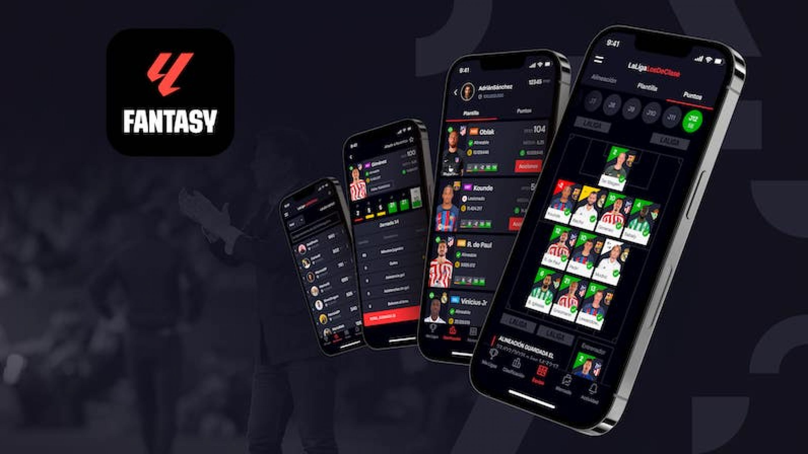
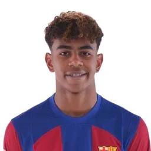
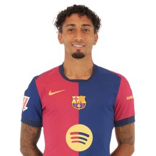

LaLigaFantasy
LALIGA FANTASY es el único juego de fútbol manager oficial, con clasificación y marcadores de los partidos en directo y puntuaciones basadas en los resultados y estadísticas oficiales de LALIGA. ¡Conquista LALIGA y conviértete en el mejor entrenador de fútbol Fantasy!
Logo De La App

Descarga la app y juega
Link LaLigaFantasy Play Store
Link LaLigaFantasy App Store


Crea Tu Plantilla
- Un equipo completamente aleatorio para que empieces a hacer puntos
- 100M al empezar tu nuevo equipo para poder fichar o subir las clasulas
- Compite contra tus amigos para ver quien queda primero en cada jornada
- Queda primero al final de la temporada para ganar camisetas de futbol gratis
Listas de los jugadores con mas puntos
- Robert Lewandowski (107 puntos)
- Lamine Yamal (101 puntos)

- Raphinha (97 puntos)
